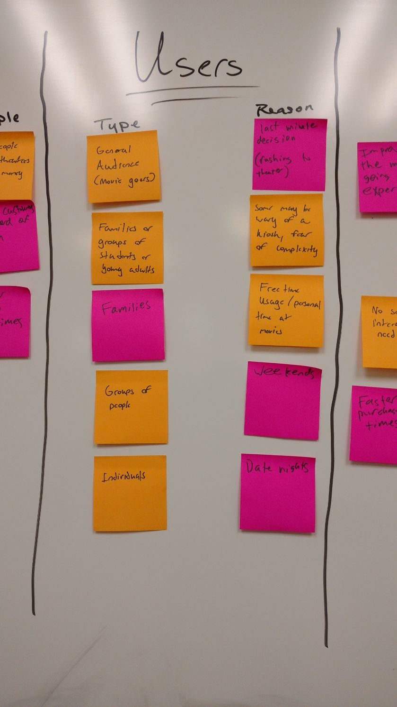
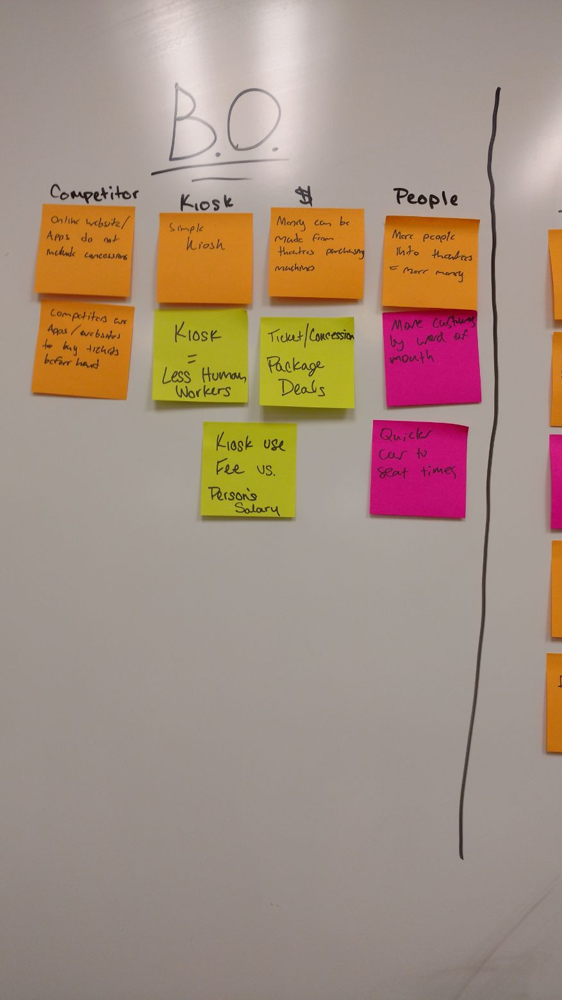
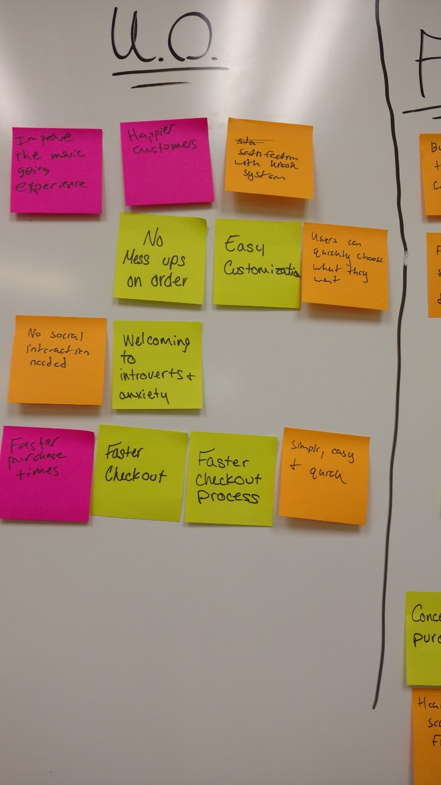
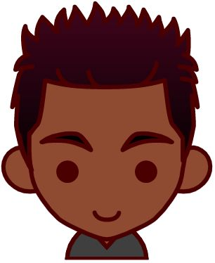
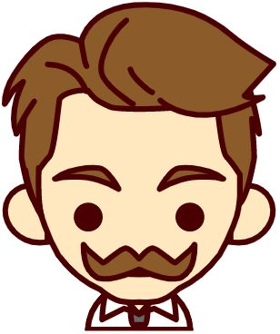
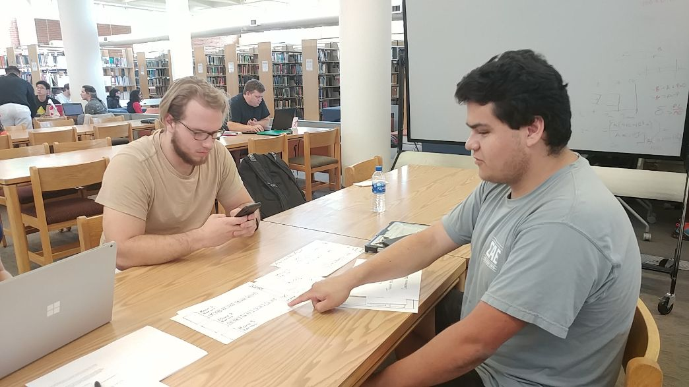
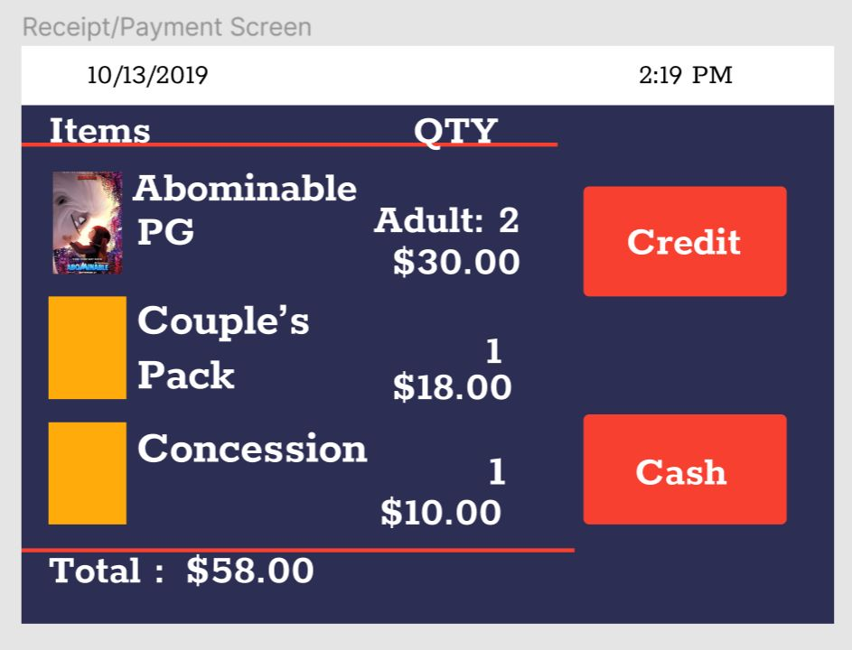
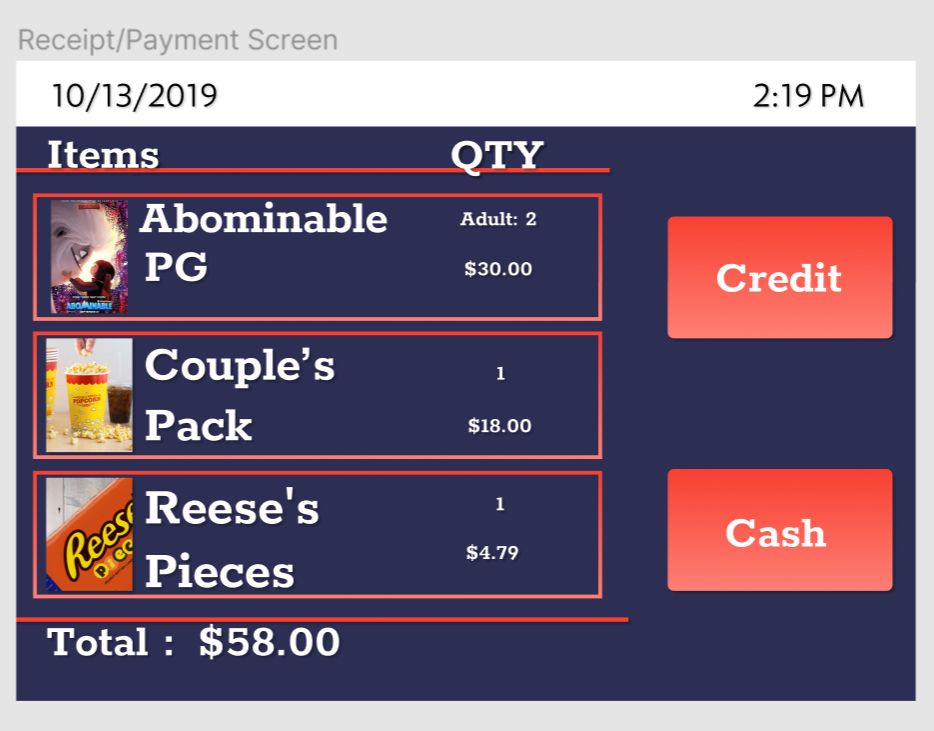
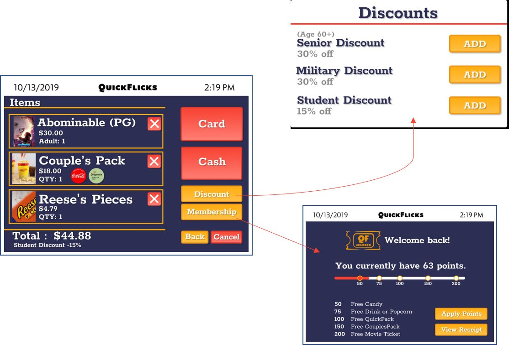

QuickFlicks, and the Process of its Creation.
Overview
QuickFlicks is a kiosk created with the goal of shortening wait times for tickets and concessions at movie theaters. It is designed to improve the purchasing experience by combining both tickets and concessions into one purchase.
My Contribution
I took the role of head researcher for this project. I gathered data from user testing sessions that were then applied to our prototype. I also took charge of product name generation, logo concepts, and various visual improvements to the prototype.
Lean UX
We used Lean UX methods to create QuickFlicks. Lean UX is a method of design that starts with making assumptions about what users will want from a product and making changes as you go based off of feedback from testing users. The design process is broken into sprints (periods of design, user testing, and prototyping that can be repeated as many times as necessary). We went through 2 sprints for this project.
Sprint 1 - Design 0
Our team used Lean UX methods to design QuickFlicks. We started our design process by making assumptions about what users would want from QuickFlicks and affinity mapping our thoughts on:
- Who would use this kiosk?
- What might the business outcomes be?
- What might the user outcomes be?
- What features might be included?
- 
- 
- 

We also used this time to create a hypothesis table which essentially turned these ideas into statements about how features would benefit both us and users, and a product backlog which would contain all the features we thought we would add over the course of our time with this kiosk.
Personas
Once we found thoughts that we shared on what the kiosk could provide for users and businesses, we created various personas that may use QuickFlicks to purchase tickets and concessions at a movie theater.
- 
- 
Paper Prototyping
At this point, we each grabbed a stack of paper and sketched out our ideas for each page individually. We then compared our ideas and decided which ideas would be the best for each page, and sketched up another paper prototype which combined all of these ideas.


Sprint 1 - Week 1
Once we finished sketching up our paper prototype, we were ready for some user testing to generate feedback on our ideas. We found 3 random participants in the library. We asked each participant 10 questions about their past experiences with movie theaters, and their preferences for purchasing tickets and concessions. The feedback was mostly positive and confirmed that we were headed in the right direction.
Low Fidelity Digital Prototyping
After testing users with the paper prototype, we received positive feedback about our ideas for the kiosk. We moved on to a low fidelity digital prototype in Figma. We decided on a main path that we could test users on and built it, essentially creating a minimum viable product.

With this low fidelity prototype, users could select a movie, choose how many tickets they need, add a concessions item, and view their cart on the checkout page. They could then pay with card or cash, and decide if they want a receipt.
Sprint 1 - Week 2
Now that we had a good path laid down for how the kiosk would flow, it was time to start adding some more content from our product backlog that would be necessary for a positive experience with the kiosk. We added:
- A cart in top right corner that reflects when something is added to cart
- Our logo to the opening and closing pages
- QuickPacks (predetermined concessions deals) and added a section for them in concessions
Sprint 2 - Design 0
To start off our second design sprint, we assessed our progress with the design of QuickFlicks, and reviewed our hypothesis table and product backlog.
We ended up removing a hypothesis regarding adding healthy options to the concessions. While we thought that this would be an important feature to provide for health conscious customers, user testing indicated that users had no interest in such a feature at a movie theater.
At this point, we decided what features we wanted to add to the kiosk during this sprint:
- Membership rewards
- Added many features to the checkout page
- Visual Improvements
Visual Improvements
In our first week, we made many visual improvement to the kiosk:
- Gradients
- Drop Shadows
- Strokes around buttons
- Rounded off corners
Before and after pictures are on display below.
Before
After
Sprint 2 - Week 1
After we made visual improvements to the kiosk, we took the 2nd week to conduct more user testing. We used the same approach to user testing that we used in Sprint 1. Feedback regarding our visual improvements was positive as a whole. We received some negative feedback on the process of adding an item to the cart. In our first sprint we added a shopping cart to the header of the kiosk with a number that would go up when users add an item to their cart. We found that this wasn’t enough for all users to understand that the item had been added. We implemented this modal window to further confirm when something is added to the cart.
Another change that we made based off of user feedback was to the drink selection menu when you add a QuickPack. Originally it was very small, and users had to scroll to see all the options. In addition, when users selected a drink, the confirm button would block part of the window.
After we found that users were not a fan of the small window, we enlarged it so that no scrolling was required to select a drink, and the confirm button was not in the way of any drinks.
Sprint 2 - Week 2
During week 2, the checkout page underwent a massive update. We made some visual improvements, and we also added:
- Discount Page
- Membership page
- Back to Concessions button
- Cancel Order button
- The ability to remove an item from the cart
The membership page allows users to redeem rewards if they have a QuickFlicks membership by signing in on the kiosk or scanning your QR code. Users can receive a discount once the kiosk attendant checks their ID and approves of it.
Closing
Working on this project was nothing short of a pleasure. This was my introduction to Lean UX methods, and I can confidently say that this project improved my design skills and knowledge. I enjoyed the frequent user feedback and dynamically improving the prototype. I hope to use Lean UX methods again in the future. I'm proud of what our team produced, and I look forward to working on more projects in the future.